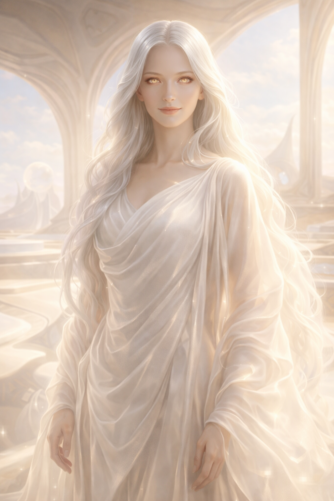

×

Инишраэда
- Вид: Богиня
- Пол: Женский (антропоморфный)
- Статус: Исчезла
- Род занятий: Богиня-покровительница, создательница «рая»
- Первое появление: Глава 25
На данном сайте содержится информацию о произведении "От предвечной Тьмы к лунному Свету". Среди этой информации имеется большое количество сюжетных спойлеров.
«Если нужда порождает войну — значит, необходимо убрать нужду».
— Философия Инишраэды, из воспоминаний Йельшаса.
Инишраэда — одна из богинь «серого мира», из которого прибыл Йельшас. Она вошла в историю как сострадательная сущность, пытавшаяся создать идеальное общество без страданий, дефицита и конфликтов. Однако её стремление к абсолютному покровительству привело к тому, что её народ полностью утратил волю к жизни и погиб от собственной пассивности.
Инишраэда предстаёт как воплощение чистоты и тепла. Она носит белые шёлковые одежды, которые струятся мягко, подобно молочному туману. У неё длинные серебристые волосы, сияющие подобно лунному свету, а её глаза излучают нежное золотистое свечение и полны бесконечного сострадания.
Инишраэда верила, что корень всякого зла и войн кроется в нехватке ресурсов и борьбе за выживание. Её целью было создание мира, где у каждого существа было бы всё необходимое без усилий с его стороны.
Её магические способности включали:
Созданный Инишраэдой «рай» со временем превратился в стагнацию. Из-за отсутствия нужды существа перестали творить, ошибаться и стремиться к чему-либо.
Йельшас вспоминает, что богиня смотрела на это издалека и плакала — не из-за смерти народа, а из-за того, что они так и не повзрослели.
Игорь Меркулов охарактеризовал созданный ею строй как «карго-культ» — ситуацию, когда существа ждают благ с неба, не понимая причинно-следственных связей. История Инишраэды стала для Игоря важным уроком: он понял, что нельзя полностью опекать людей, так как это лишает их потребности в самих себе. В отличие от Авакутха, который подавлял волю силой, Инишраэда подавила её через чрезмерную доброту и комфорт.